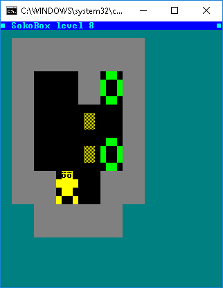
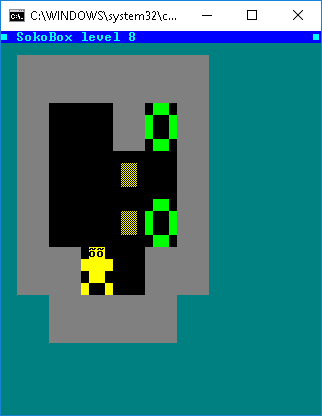

BatchGame Sokobox 1.4
Posted: 21 Sep 2018 15:01
Hello
Round 2012 I published a batch game called Sokobox that used my tool bg, in this same forum.
But the code stop working ok on windows 10, mainly because outdated internal code of bg, very old version (2.7) when windows 10 still did not exist.
I read yesterday about this old batch game in this page: https://www.thebateam.org/2017/05/the-s ... azing.html
Thus, I'be remastered a little bit the code for works okay on windows 10 with the latest version of bg (3.9)
And changing a little colors.
I publish this new Sokobox version 1.4 only for fun.

Here inside the bg utility is the updated batch game:
https://github.com/carlos-montiers/cons ... 1/bg39.zip
Also appear as a backgrund image of my bg tool: https://github.com/carlos-montiers/cons ... /master/bg
I hope batch users can continue getting fun with this batch game.
Round 2012 I published a batch game called Sokobox that used my tool bg, in this same forum.
But the code stop working ok on windows 10, mainly because outdated internal code of bg, very old version (2.7) when windows 10 still did not exist.
I read yesterday about this old batch game in this page: https://www.thebateam.org/2017/05/the-s ... azing.html
Thus, I'be remastered a little bit the code for works okay on windows 10 with the latest version of bg (3.9)
And changing a little colors.
I publish this new Sokobox version 1.4 only for fun.

Here inside the bg utility is the updated batch game:
https://github.com/carlos-montiers/cons ... 1/bg39.zip
Also appear as a backgrund image of my bg tool: https://github.com/carlos-montiers/cons ... /master/bg
I hope batch users can continue getting fun with this batch game.